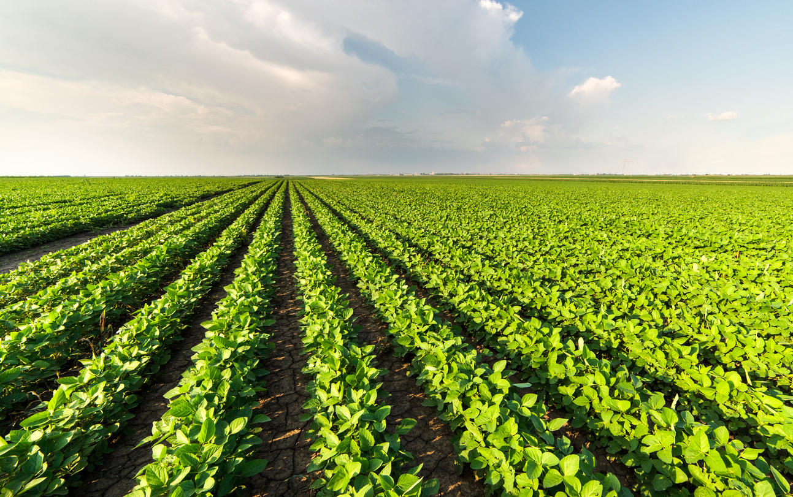

Agricultural Marketplace
Discription
Shop NowFeatured Products
SEEDS
Vegetables from your nearest supermarket may look fresh and stain-free. But are they really healthy? Why buy unhealthy vegetables from outside vendors when you grow your own healthy vegetables at home?
VIEW SEEDS HERE OpenFERTILIZER
In plants, fertilization occurs when pollen, produced by the male reproductive organs called stamens, reaches the female reproductive organ called the pistil. The transfer of pollen can happen through various means, such as wind, insects, or other animals. Once the pollen reaches the pistil, it travels down to the ovary, where the ovules (containing the eggs) are located.
Add to CartEQUIPMENTS
Farmers rely on a wide range of equipment to carry out various agricultural tasks efficiently. Here are some commonly used farmer equipment: .
Add to Cart